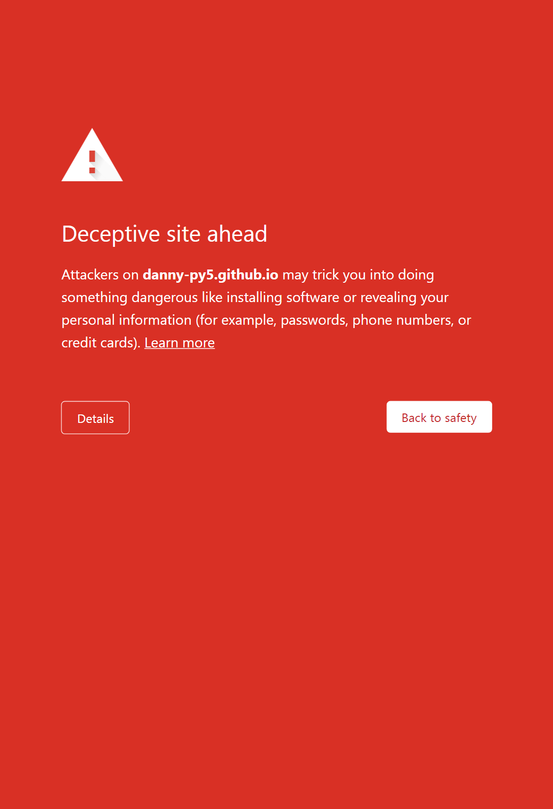

My Programming Life and What Challenges I face On the road
This website content is confidential. and it belongs to Daniel Olatunde Fatokun
I decided to start jotting my experiences down on 27th of December 2024.Issues and how i fixed them
-
I faced Deceptive site ahead error: Showing in all my hosted websites on my github
This error gave me a lot of concern and feel tired but I threw it to facebook in many programming groups. I got a lot of feedbacks but none of them seems to solve the issue. BUT chatGPT helpd me out. It directed me to a google website where click on a review button after i had described that my website has no bad links again that i have fixed them. But i never fixed enything i just give it a try to just say such. And boom :) my website got resolved. google later sent a mail to me that:
here is the content of the mail
Review successful for https://danny-py5.github.io/My-portfolio/To: Owner of https://danny-py5.github.io/My-portfolio/
Google has received and processed your security review request. Google systems indicate that https://danny-py5.github.io/My-portfolio/ no longer contains links to harmful sites or downloads. The warnings visible to users are being removed from your site. This may take a few hours to happen.
Here are ways to keep your site safe in the future:
- Secure your site from any future attacks Identify and fix vulnerabilities that caused your site to be compromised. Change passwords for administrative accounts. Consider contacting your hosting service for assistance.
- Always follow the Unwanted Software Policy Make sure all downloadable files from your site comply with the criteria listed in the policy. Files that violate these criteria will be identified as unwanted software.
Some jots when I Code
- Sometimes when i get one concept, i will just stand up on the computer happily looking, and talking to myself that, Hmm... smiles, I am going heigher and improving rapidly. Sometimes feels am the best and yes am always the best
- Most times, i found it difficult to grasp the JS course from supersimpledev most expecially when am trying to understand the exercises :(
- Testing... pulled my legs oooo..
- "this" keyword, is mad oooo e do me shegey :(;
- -> i was learning Promises. The journey isn't straight, some how confusing